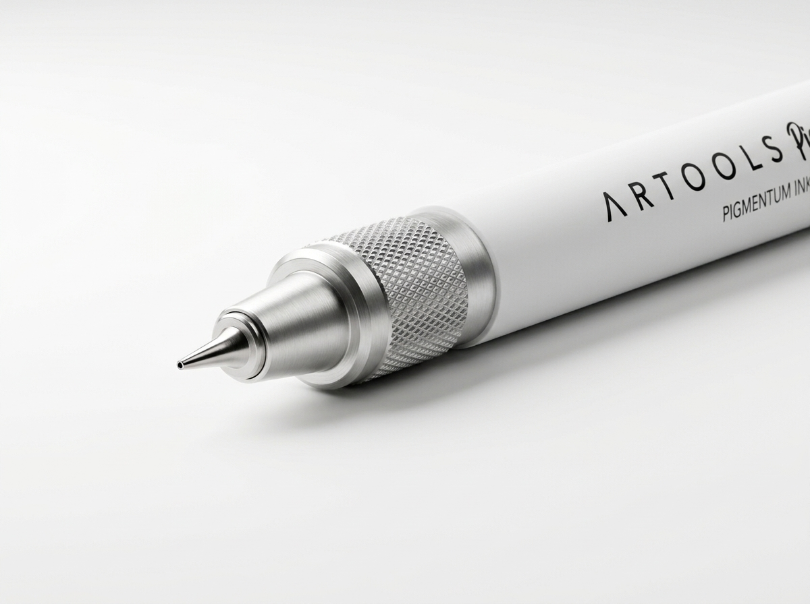
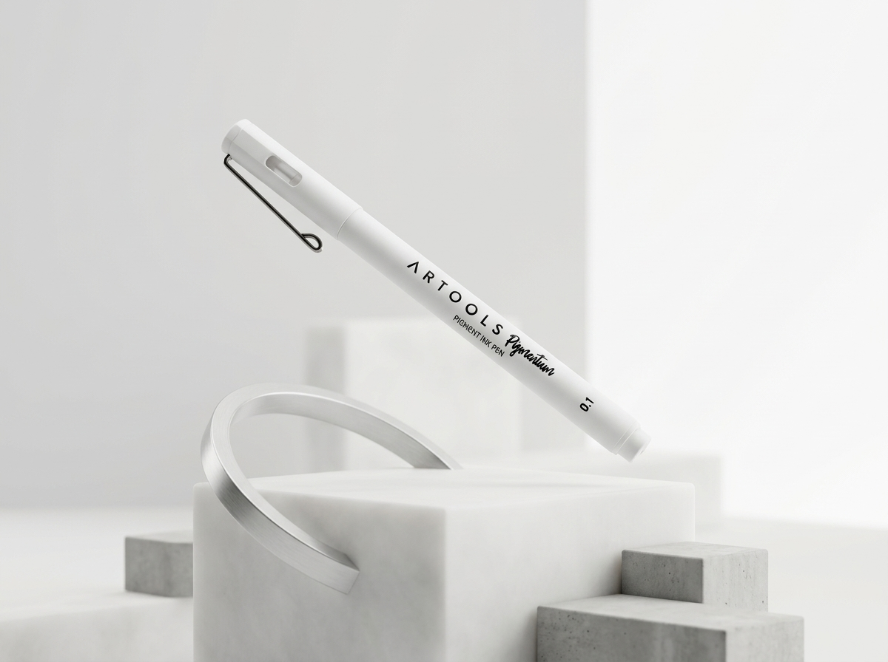

A caneta mais tecnológica do mundo.
A Artools Precision Pen redefine o equilíbrio entre peso, fluxo e design. Feita para criadores que exigem perfeição em cada traço.
Equilíbrio áureo.
Corpo monolítico.
Centro de Massa Calibrado
Usinada a partir de um bloco sólido de Titânio Grau 5 com tolerância de ±0.002mm para eliminar qualquer fadiga muscular.
Câmara Pressurizada
Fluxo hermético de nanoriço japonês que responde instantaneamente na vertical, horizontal ou em micro-traços rápidos.
PERFEIÇÃO EM
CADA TRAÇO.
A ponta híbrida de 0.18mm em tungstênio polido desliza sem atrito, entregando linhas arquitetônicas com densidade óptica constante.
Engenharia Suíça.
Precisão Molecular.
Nossa arquitetura de fluxo proprietária sincroniza a deposição de tinta em tempo real. Construída sobre um chassi de alumínio aeroespacial usinado em CNC de 5 eixos.

Alumínio Aeroespacial
Estrutura monobloco usinada em Alumínio Série 7075-T6. Leveza extrema (24g) com resistência estrutural de nível militar e toque cerâmico Pure White.
Fluxo Híbrido & Nanocarbono
Sistema de tinta Nano-Pigmentum™ com secagem em 0.04s e regulação por capilaridade assistida. O traço nunca falha até 15° em qualquer velocidade.
Grip Texturizado & CNC
Micro-usinagem a laser cria uma superfície recartilhada de aderência perfeita (Ra 0.8µm) sem acumular resíduos nem escorregar com suor.
Prancheta Virtual 0.1mm Live Canvas
Sinta a precisão cirúrgica de 0.10mm ao vivo na prancheta interativa abaixo. Desenhe, assine ou faça testes com o cursor ou toque.
Prancheta de Teste de Traço ao Vivo
Calibração & Atelier.
Customização Sub-Mícron.
Cada instrumento é calibrado sob demanda na Suíça. Escolha o diâmetro da ponta, a formulação da tinta de nanocarbono e personalize o chassi de alumínio aeroespacial 7075-T6 com sua assinatura gravada a laser em tempo real.

* A gravação é usinada a laser com profundidade de 0.05mm na liga aeroespacial 7075-T6.
Secagem Instantânea Molecular
As nanopartículas de pigmento ligam-se termicamente à celulose instantaneamente. Zero borrões mesmo em movimentos ultrarrápidos de canhotos.
Autonomia Contínua de Linha
Extensão equivalente a subir e descer o Monte Everest desenhando continuamente sem falhas de fluxo, gotejamento ou perda de densidade preta.
Rigidez Torsional
+107% vs Alumínio 6061 convencional.
Longevidade Arquival
Fade-proof à prova de raios UV e água.
Sinfonia do Traço.
Fluidez sem Gravidade.
Cada movimento capturado em tempo real. Veja a perfeita sincronia entre a engenharia mecânica suíça e a física de nanopartículas no momento exato em que a ideia se torna matéria.
Zero Resistência ao Escrever.
A tinta atinge o papel antes do metal tocá-lo.
Enquanto canetas comuns demandam entre 15g e 30g de pressão manual contínua gerando fadiga no pulso, a Artools Pro opera com um menisco capilar hiperbólico calibrado a 12 nanômetros da superfície celulósica. A gravidade da própria mão é o suficiente para criar linhas pretas contínuas de saturação óptica absoluta.
Sensação de flutuação hidrodinâmica pura.
Fluxo instantâneo desde o 1º milímetro.
Zero falha mesmo em traços rasantes.
A ferramenta invisível para
ideias tangíveis.
Fluxo Contínuo
A tinta flui sem interrupções, permitindo que seus pensamentos corram livremente para o papel sem fricção.
Silêncio Absoluto
Mecanismo de amortecimento interno e ponta selada. Escreva em qualquer ambiente com discrição total.
Equilíbrio Neutro
Centro de gravidade estudado para repousar na junção da mão, reduzindo a fadiga muscular em 40%.
ArtoolsPro
Signature Series • 2026